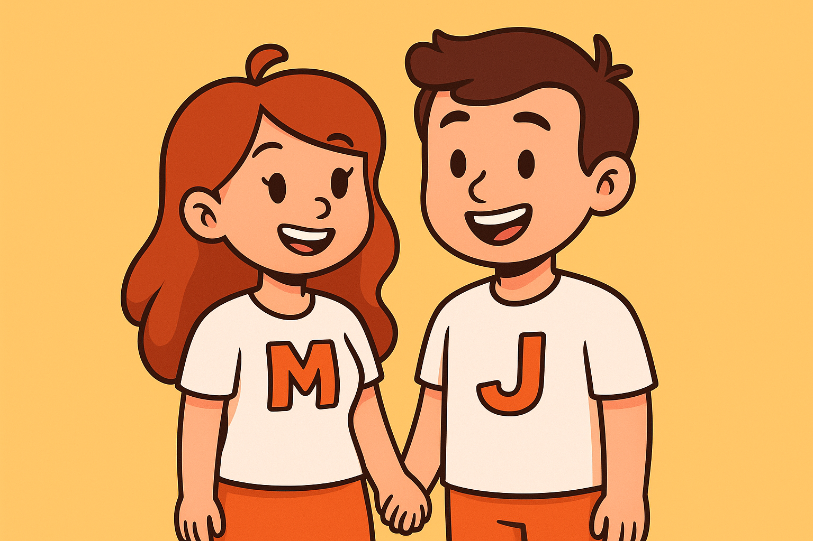

Who We Are
I grew up thinking I was just lazy, anxious, or not trying hard enough. In school I was quiet, well-behaved, and coasting. Because I wasn’t disruptive, nobody noticed I was drowning. I went through high school unsupported, always feeling like I was two steps behind everyone else.
In my twenties, after having my first daughter, I was diagnosed with postnatal anxiety. For years, I blamed my inability to keep up - the piles of laundry, the messy house, the buzzing mind that never shut off - on anxiety, depression, or being tired. I told myself I was just a mum of three who needed to “get it together.” I pushed through job after job, chasing novelty and thinking each one was the one, only to hit the same wall of exhaustion and self-blame a few months in.
When Covid hit, things got worse. My relationship suffered. My house fell apart. I pushed my family and friends away because their concern felt like criticism. I internalised everything and tried to carry on.
I didn’t know it then, but I was living with undiagnosed ADHD, masking every day and collapsing at home. It wasn’t until I started recognising the same traits in my eldest daughter that the penny dropped. TikTok became my accidental classroom. Video after video described my life in words I’d never heard before.
Suddenly, the piles of laundry, the unopened letters, the binge eating, the career hopping - it all made sense. By the time I was on my NHS ADHD waitlist, I’d already been struggling for years. Nobody told me about Right to Choose, so I waited, and waited. I started a new job in a school, loved it, and poured everything I had into it - but without adjustments, I burned out.
New leadership came in, and the environment became toxic. By January 2025, I’d emailed my workplace asking for help. I told them about my suspected ADHD. Nothing happened. No adjustments, no risk assessment.
By then, I was in full burnout, physically ill, and mentally broken. That was the turning point. I realised I couldn’t just keep surviving like this. My colleague (also ADHD, also on a waitlist) and I started researching Right to Choose ourselves. We wrote the letters, handed them to our GPs, and took control. I finally got my diagnosis in May 2025, my medication in June - but the damage was done. By September, I had to go off sick. During that time, I spent countless hours online - on forums, TikTok, legal websites - trying to heal while also fighting my case at work. The information was all scattered, hard to find, and overwhelming for an ADHD brain. I needed one place where everything lived: legal rights, workplace templates, community support, real stories. It didn’t exist. So we made it.
Our Mission
Mads ADHD is a space built from that chaos. It’s the site I wish I’d had - a place where ADHD people can come for guidance, resources, and community without having to piece it all together themselves. It’s built by me and Jay: I bring the lived experience, and he brings the digital brains. Jay built the site, researched how to make it ADHD-accessible, and kept me going when my executive dysfunction was high.
This space is about community, education, and empowerment. It’s about making ADHD life a little less isolating, a little more informed, and a lot more hopeful. We don’t have all the answers — not yet — but we’re building something that might just make the search a little easier for the next person who finds themselves where I once was.
This isn’t just a website. It’s our way of making sure nobody else has to go through what we did alone. Here, you’ll find legal advice, template letters, community stories, and practical tools to help you advocate for yourself at work, at home, and in life. We want you to leave feeling informed, empowered, and supported - not lost, overwhelmed, and broken.
Because we’re done surviving. It’s time to thrive.